How to run your properties in PMS, from the first sign-in to rent, receipts and reports, plus a short guide for your renters.
Part 1 follows the order you'll use PMS in: set up your buildings once, add renters and leases, then bill and collect every month. Part 2 is written for your renters; you can share those pages with them.
| Staff sign-in | pms.bjptechnologies.co.tz/manage |
| Your website | pms.bjptechnologies.co.tz/your-workspace |
| Renter portal | pms.bjptechnologies.co.tz/your-workspace/portal |
Your workspace name is the short name in your invitation email, for example mshale-plaza.
Everything here happens in the staff area at pms.bjptechnologies.co.tz/manage, on a computer or a phone.
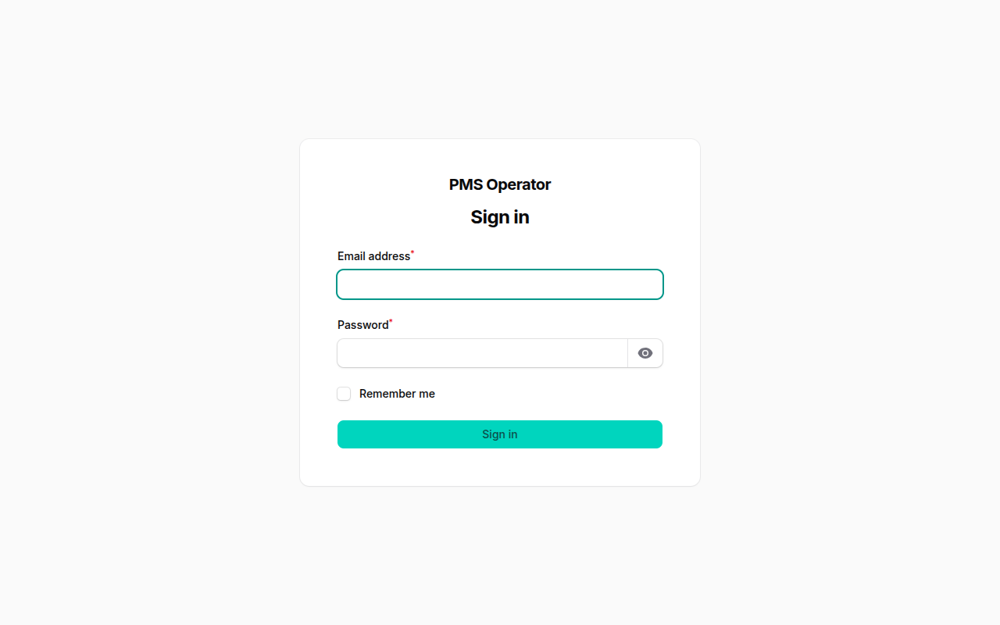
The dashboard is the first page after signing in. The four figures at the top tell you where you stand this month:
| Occupancy | The share of your units that have a renter. |
| Collected this month | Payments recorded this month, against what was billed. |
| Outstanding | Everything still owed on open invoices. |
| Overdue | The part of that which is past its due date. |
Below them are your collections over six months, units by status, the five largest unpaid invoices and the latest payments. A short tour runs the first time you sign in; you can skip it.
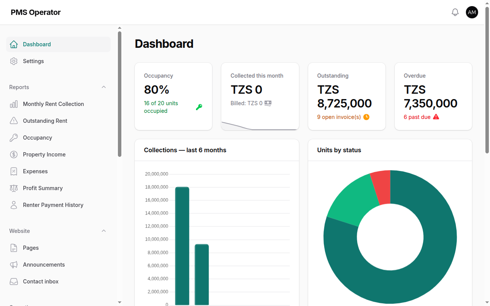
The menu on the left is grouped by job. On a phone, open it with the menu button at the top.
| Menu group | What's in it |
|---|---|
| Dashboard, Settings | Your overview, and your workspace details and plan (section 13). |
| Inventory | Locations, Properties and Units: your buildings, set up once. |
| Leasing | Renters and Leases. |
| Billing | Invoices, Payments and Receipts. |
| Operations | Expenses and expense Categories. |
| Maintenance | Repair requests from renters and staff. |
| Website | Your public website's Pages, Announcements and Contact inbox. |
| Reports | Seven reports, each downloadable as Excel or PDF. |
| Administration | Team (your staff) and Roles & Permissions. |
Every list works the same way: search at the top right, filters behind the funnel icon, and the action buttons (Edit, Issue, Download PDF and so on) at the end of each row. The bell at the top shows notifications, such as a new maintenance request.
Set this up once. A location is an area (region, district, ward), a property is a building or compound, and a unit is what you rent out: a room, apartment, business frame, office, shop or warehouse.
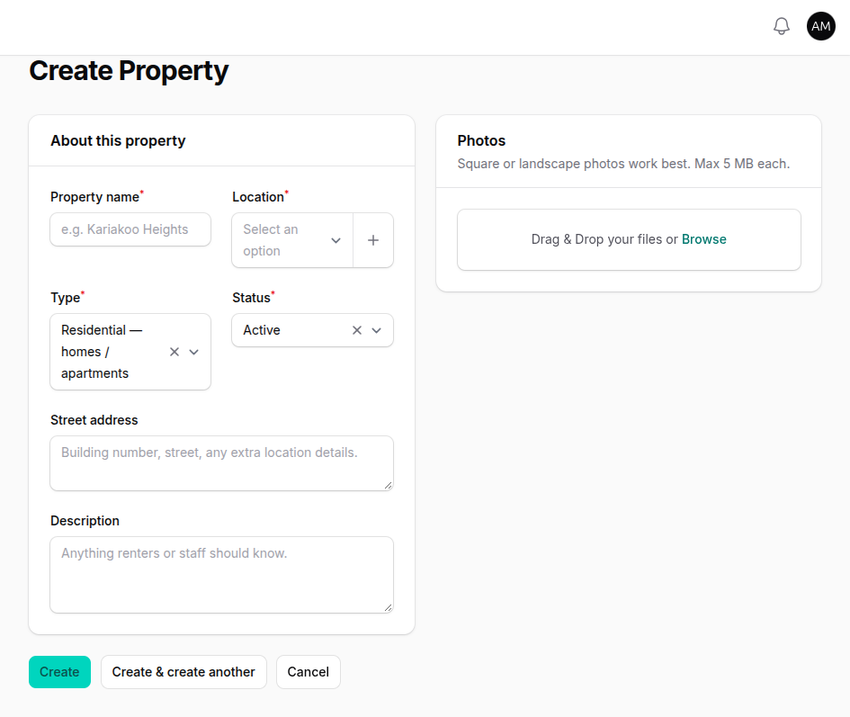
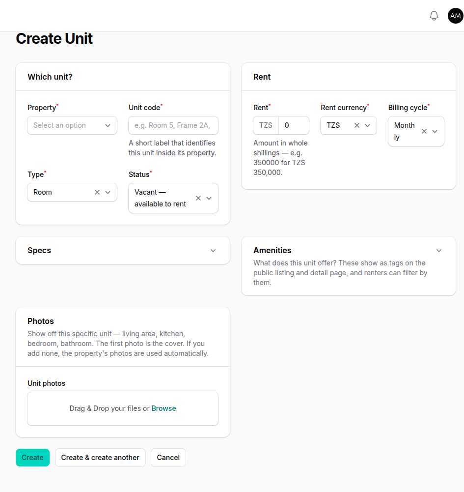
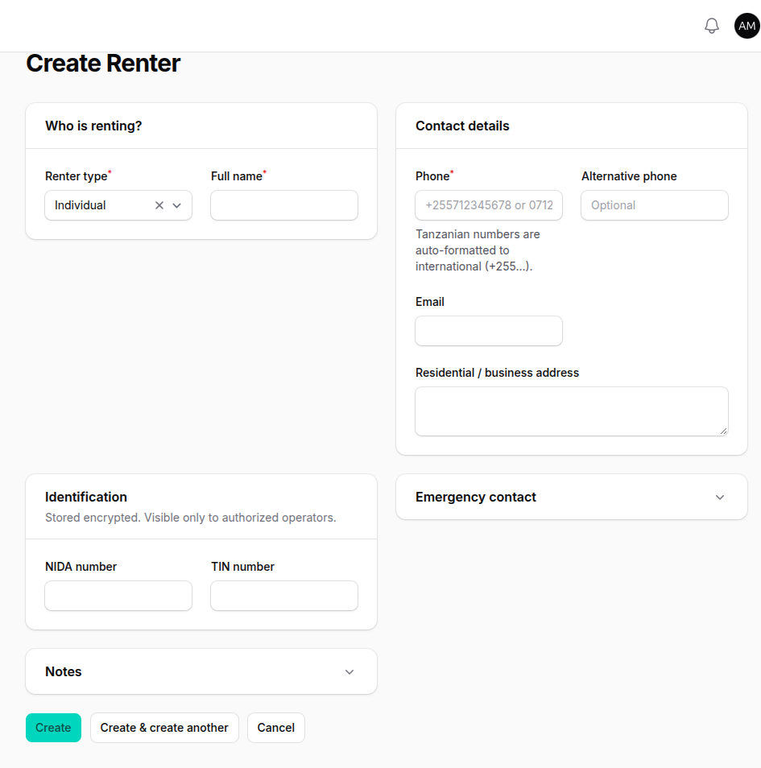
A lease connects a renter to a unit, with the rent, dates and deposit. Creating one takes four steps.
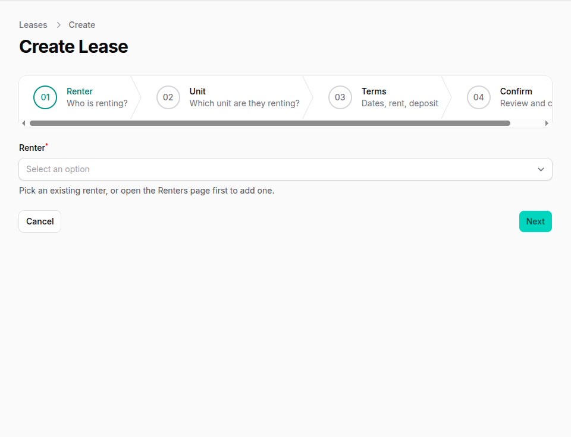
When the renter moves in, press Activate on the lease. Three things happen:
| Download PDF | A printable lease contract to sign. |
| End (natural) | The lease ran its course. The unit becomes vacant again. |
| Terminate | Ending early. You're asked for a reason, which is kept in the history. |
| History | Every change to the lease, who made it and when. |
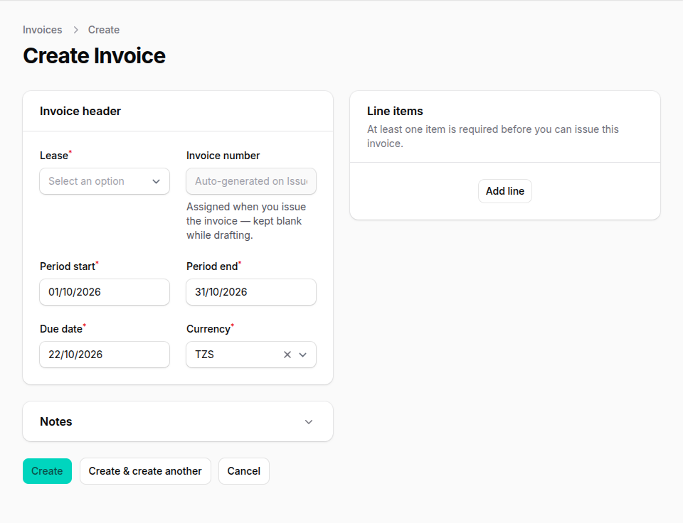
| Draft | Not sent yet; only you can see it. |
| Unpaid | Issued, nothing paid. |
| Partial | Part of it is paid. |
| Paid | Fully paid. |
| Overdue | Past its due date and not fully paid. PMS checks every morning at 06:00 and emails the renter a reminder. |
| Cancelled | Cancelled with Cancel; kept for your records. |
Every invoice can be downloaded with Download PDF.
Renters pay you the way they always have: cash, bank, mobile money. You record the payment in PMS, and the receipt is produced for you.
PMS then updates the invoice balance, creates a numbered receipt, and emails it to the renter as a PDF. You'll find every receipt under Billing → Receipts, where you can download or email it again.
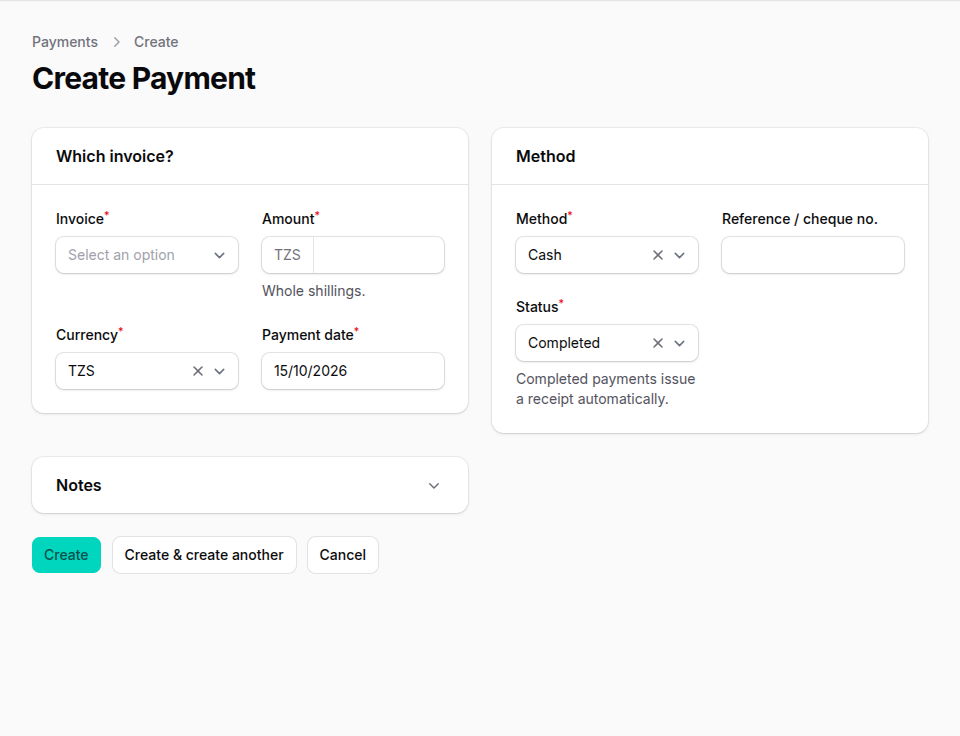
Record what your buildings cost, such as repairs, security, cleaning and utilities, so your reports show real profit. Go to Operations → Expenses, press New Expense, and choose a category, the property, the amount and the date. You can attach a photo of the paper receipt. Manage your list of categories under Operations → Categories.
Renters report problems from the renter portal, with photos if they like. Staff can also log a request with New Maintenance Request.
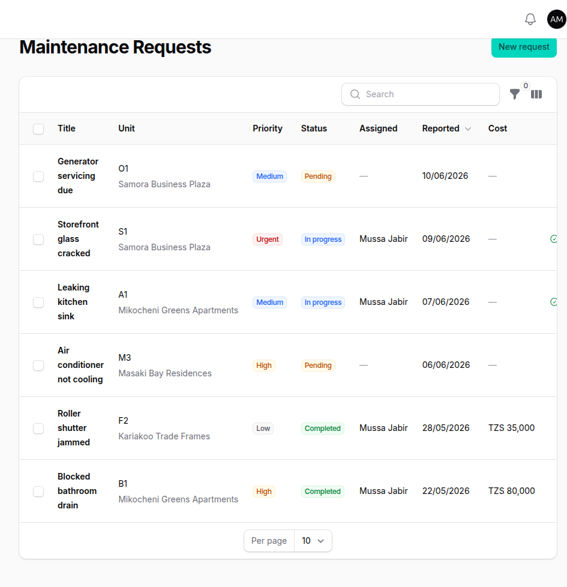
Your workspace comes with a public website at pms.bjptechnologies.co.tz/your-workspace, with Home, About, Units, News and Contact pages.
Seven reports under Reports in the menu. Choose the filters, such as the property or the dates, then press Download Excel or Download PDF. Reports are included from the Starter plan up.
| Monthly Rent Collection | What was billed and collected each month. |
| Outstanding Rent | Who owes what, and how late it is. |
| Occupancy | Occupied and vacant units per property. |
| Property Income | Income per property. |
| Expenses | Spending by category. |
| Profit Summary | Income minus expenses. |
| Renter Payment History | Every payment one renter has made. |
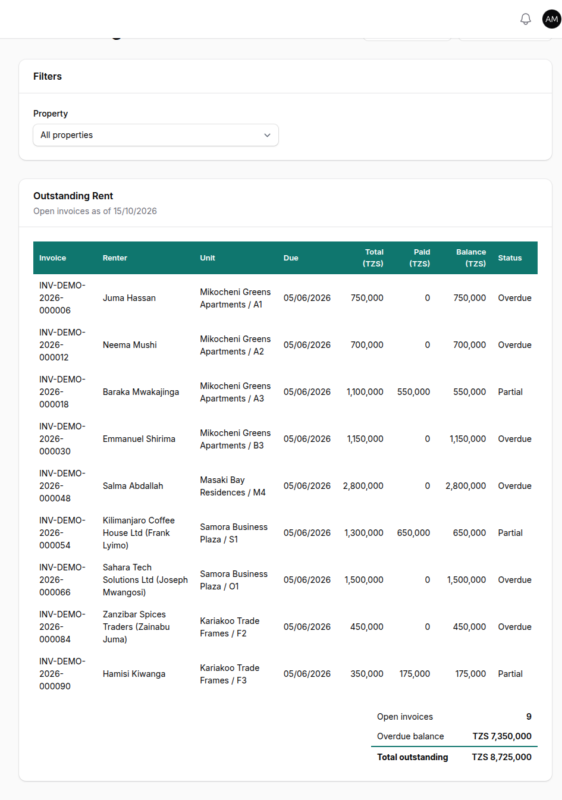
| Role | Typical use |
|---|---|
| Owner | Everything, including the team and settings. |
| Manager | Day-to-day running: renters, leases, billing, maintenance. |
| Accountant | Invoices, payments, expenses and reports. |
| Maintenance staff | Maintenance requests. |
On the Pro plan and above, the owner can change exactly what each role may do under Administration → Roles & Permissions.
Settings (owners only) has five tabs: Business (name, email, phone), Branding (logo and colour, used on your website and renter portal), Preferences, Security (change your password) and Subscription (your plan and when it renews).
Your landlord uses PMS to manage your tenancy. The renter portal lets you see your rent, download receipts and report problems from your phone. Nothing to install: it opens in your browser.
Go to the portal address your landlord gives you, for example pms.bjptechnologies.co.tz/mshale-plaza/portal. Sign in with your phone number (such as 0712345678) and your password.
The Dashboard shows your unit, your next due date, what you owe in total, and your lease details. Under Invoices you'll see every invoice; filter by Open or Paid, and download the receipt for any payment.
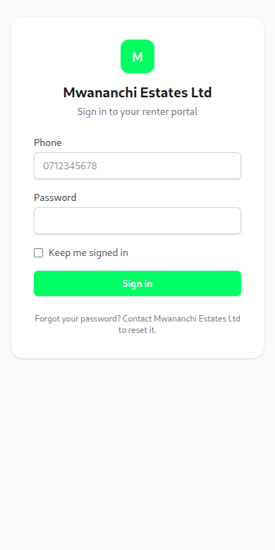
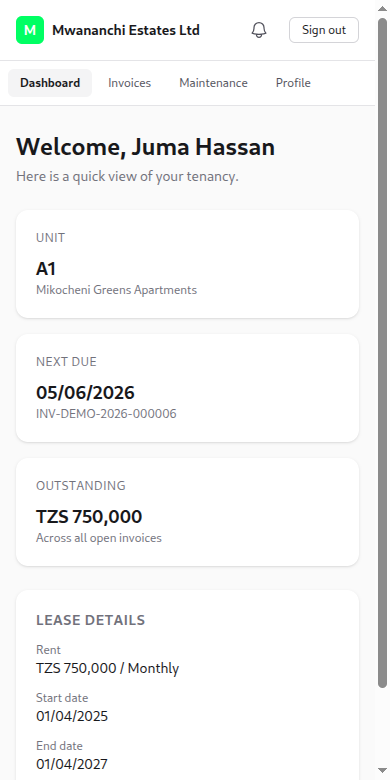
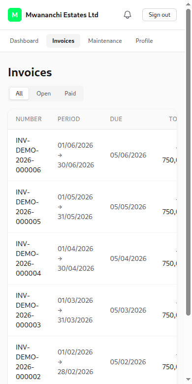
Pay your rent the way your landlord asks: cash, bank or mobile money. Once they record it, your receipt arrives by email and appears here.
Under Profile you can update your details and change your password.
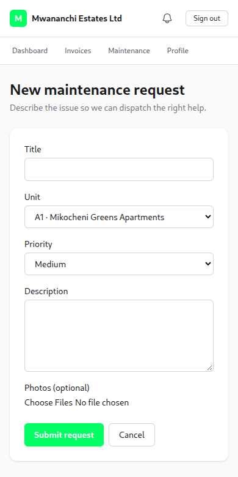
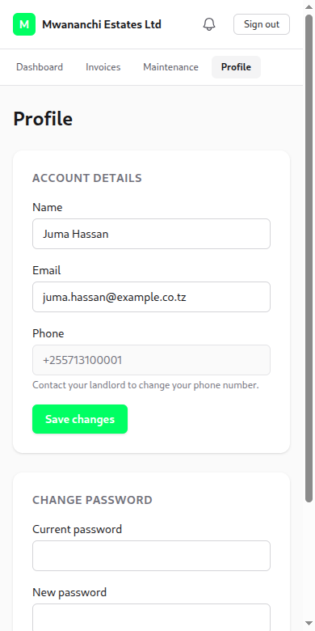
Landlords and staff can contact BJP Technologies. Renters, please contact your landlord first.